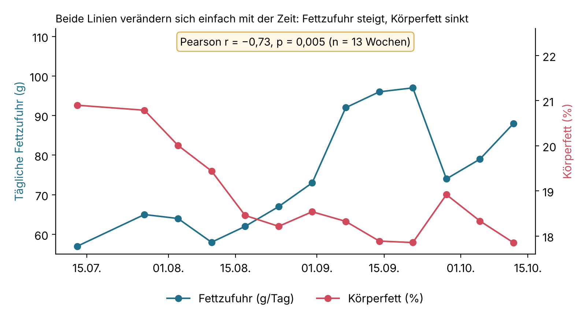
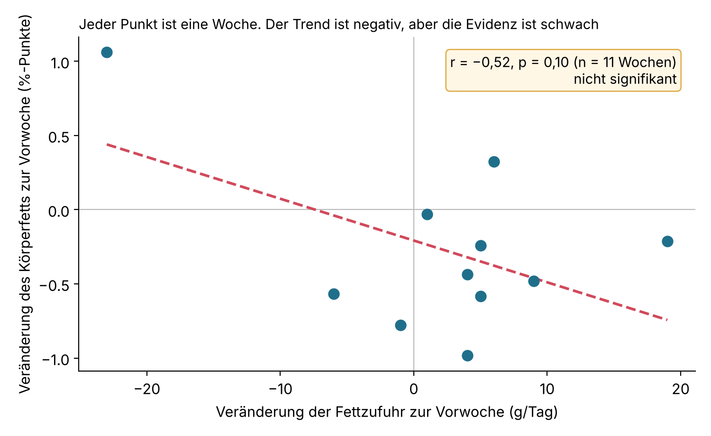

Beeinflusst meine Ernährung meinen Körper und mein Laufen?
Explorative Analyse · Python · Statistische Tests
Gesundheit ist unser wertvollstes Gut, und fast alle müssen sich darum kümmern, ob als Unternehmerin, Elternteil, Student oder Sportler. Sport ist neben Data Science eine meiner Leidenschaften. In dieser Analyse nutze ich meine persönlichen Daten, um herauszufinden, ob es einen Zusammenhang zwischen dem, was ich esse, und meinem Körpergewicht, meiner Körperzusammensetzung sowie meiner sportlichen Leistung gibt. Wenn ich einen signifikanten Zusammenhang finde, kann ich ihn nutzen, um diese Werte zu verbessern.
Forschungsfrage
Hat das, was ich esse, einen positiven oder negativen Zusammenhang mit meiner Körperzusammensetzung (Gewicht und Körperfett) und meiner sportlichen Leistung (Laufgeschwindigkeit und Laufdistanz)?
Daten
- Ernährungseinträge aus der Tracking-App Carbon
- Sportdaten von Garmin
- Daten aus Google Health Connect
- Daten von 100 Tagen
Vorgehen
- Daten aufbereiten:
- Daten aus verschiedenen Quellen extrahieren.
- Jedes Lebensmittel einer von acht Kategorien zuordnen (z. B. Banane und Heidelbeere →
fruit):eggcoffeebread_grainplant_milkprotein_productveg_saladfruitoil
- Daten bereinigen (z. B. fehlerhafte und fehlende Werte behandeln).
- Pearson-Korrelationstests durchführen.
- Prognosemodelle erstellen.
- Ergebnisse auswerten.
Erkenntnisse
1. Vor 20–30 Jahren glaubten viele Menschen fälschlicherweise, dass Fett essen zu mehr Körperfett führt. Die Wissenschaft hat inzwischen gezeigt, dass das nicht stimmt, und meine Daten bestätigen es: Auch bei höherer Fettzufuhr haben mein Gewicht und mein Körperfett nicht zugenommen. Das deutet darauf hin, dass eine Zunahme von Gewicht und Körperfett von anderen Faktoren bestimmt wird, etwa vom Aktivitätsniveau und der gesamten Kalorienzufuhr.

In dieser Grafik und in meinem statistischen Test geht eine höhere Fettzufuhr mit weniger Körperfett einher. Ich wollte das genauer untersuchen, denn es könnte ein Zufall über die Zeit sein: Möglicherweise habe ich im selben Zeitraum einfach mehr Fett gegessen und Körperfett verloren, wegen anderer Faktoren wie mehr Sport oder besserem Schlaf.
Deshalb habe ich die Korrelation zwischen der wöchentlichen Veränderung der Fettzufuhr und der wöchentlichen Veränderung des Körperfetts geprüft. Das neue Ergebnis:
- r = −0,52: weiterhin eine negative Tendenz
- p = 0,10: das Ergebnis ist nicht mehr signifikant

Fazit: Meine wöchentliche Veränderung der Fettzufuhr hat keinen signifikanten Einfluss auf die wöchentliche Veränderung meines Körperfetts.
Statistik und Analytik sind spannend 🤩✨: Um echte Erkenntnisse zu gewinnen, muss man ein Problem aus mehreren Blickwinkeln betrachten, und genau das liebe ich daran. 📊
2. Es gibt keinen statistisch signifikanten Zusammenhang zwischen meiner Ernährung und meiner Laufgeschwindigkeit oder -distanz. Das widerspricht meiner Annahme: Ich dachte immer, dass mehr Kohlenhydrate oder Protein vor dem Training meine Leistung steigern würden. Meine Ergebnisse zeigen, dass die sportliche Leistung viele weitere Einflussfaktoren neben der Ernährung hat, etwa die Art des Trainings (z. B. Intervall, Dauerlauf oder Regenerationslauf). Die Treiber der Leistung herauszufinden wäre ein interessantes Thema für weitere Analysen.
Tools
- SQL
- Python
- scikit-learn
- Statistische Tests